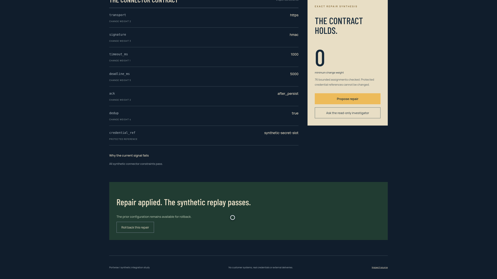

Configuration conflicts hide behind a healthy connection.
http → https
none → hmac
10000 → 1000 ms
immediate → after_persist
false → true deduplication
Exact bounded search · protected credential reference unchanged

A reviewed, reversible path from a broken configuration.